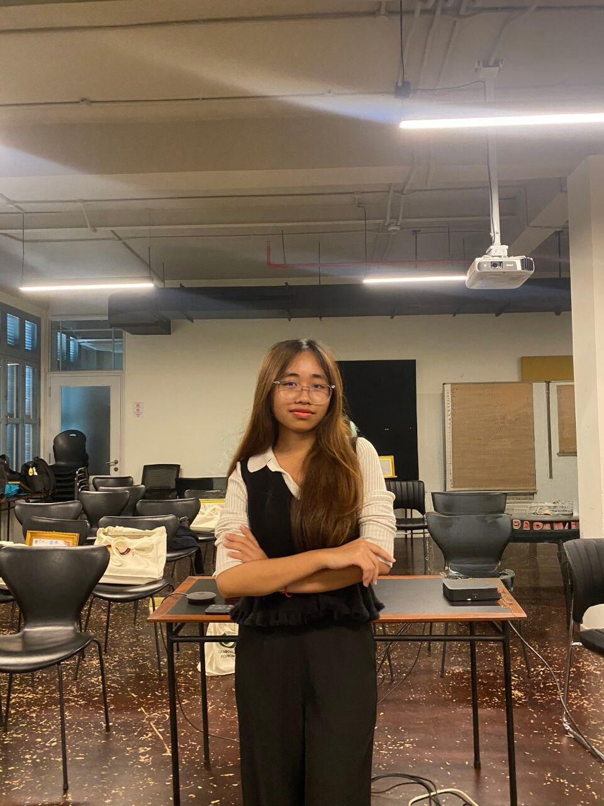

Sophomore Cybersecurity Major
Sophomore International Relations Major
Focused on Digital Security, Cyber Policy, and Global Risk Analysis.

I am a sophomore majoring in Cybersecurity at the American University of Phnom Penh (AUPP) and International Relations at Insitute of International Relations and Public Policy (IISPP). My interests lie at the intersection of technology, global security, and digital governance. I aim to develop secure systems while understanding their impact on international policy and global affairs.
HTML, CSS, Basic JavaScript, Phyton, Networking Basics, Basic Git & GitHub
Threat Awareness, Security Principles, Risk Assessment, Cyber Hygiene
Leadership & Teamwork, Management, Problem Solving, Critical Thinking, Research & Analysis
Writing & Editing, News Writing, Feature Writing, Script Editing, Content Planning
Designed and built portfolio website using HTML and CSS.
Created a basic login UI with input validation principles and security-focused design patterns using JavaScript.
Analyzed emerging cyber threats and their impact on international relations and digital governance.
Co-created and produced podcast episodes. Contributed to video editing, storytelling, and post-production design.
American University of Phnom Penh (AUPP)
Bachelor’s Degree in Cybersecurity (Sophomore)
Institutions of International Studies and Public Policy (IISPP)
Bachelor's Degree in International Relations (Sophomore)
Third-placed Winner
First Winner
Outstanding Student
Certificate of Recognition
Outstanding Team Award
Role: Core Team Member
Charity run focused on teamwork and fundraising for children’s education and essential needs in Cambodia.
Participated in donation initiatives supporting displaced people and military communities during regional border tensions.
Contributed to team-based activities promoting community engagement and fundraising for rural students and children in Cambodia.
Assisted in organizing vendor booths, coordinating logistics, and supporting Khmer New Year cultural celebrations.
Improved organizational skills, attention to detail, and supported fair debate processes.
Participated in cross-cultural engagement activities and contributed to positive student development.
Email: contact.rachanain@email.com
GitHub: github.com/rachanain
Telegram: t.me/chana_in
Phone: +855 81 369 969